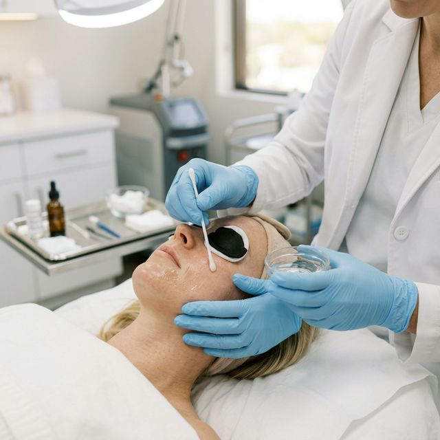
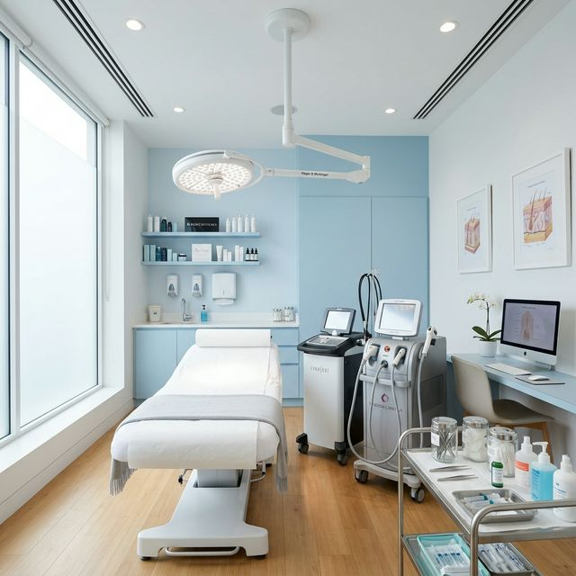

Expert Dermatology &
Cosmetology Care
Trusted by over 1,000 patients for medically grounded skin treatments, aesthetic procedures, and comprehensive dermatological care in Wakad, Pune.
Dr. Nandini Teli
MD – Dermatology, Venereology & Leprosy
Dr. Nandini Teli
Consultant Dermatologist & Cosmetologist
Dr. Nandini Teli brings over 17 years of dedicated clinical experience in dermatology, venereology, and cosmetology. Holding an MD in Dermatology, Venereology & Leprosy, she has built a strong reputation for her evidence-based approach to treating skin conditions — from complex cases of psoriasis and fungal infections to advanced aesthetic procedures.
Currently practicing at Alpha Super Speciality Hospital in Wakad, Dr. Teli combines the reliability of hospital-grade infrastructure with personalized patient care that has earned her a 4.4-star rating and the trust of over 1,000 patients.
MD Dermatology
Dermatology, Venereology & Leprosy
Hospital-Based Practice
Alpha Super Speciality Hospital
1000+ Patients
High patient approval & outcomes
Proven Outcomes
Psoriasis, fungal infections, & more
Effective dermatology starts with understanding the patient — their condition, their concerns, and their confidence in the treatment plan.
Consistent Care, Real Results
Built on clinical expertise, hospital infrastructure, and a patient-first approach that delivers outcomes, not promises.
Hospital-Grade Setup
Practicing at Alpha Super Speciality Hospital ensures your treatment is backed by multi-speciality infrastructure, stringent safety protocols, and emergency-ready facilities.
Evidence-Based Treatments
Every treatment plan is grounded in clinical evidence. Dr. Teli focuses on proven medical protocols to deliver measurable results across dermatological conditions.
Patient-Centered Approach
With 170+ positive reviews and 1,000+ patient stories, our practice is built on listening, understanding, and delivering care with empathy and transparency.
Comprehensive Dermatology Services
From everyday skin concerns to specialized aesthetic procedures — structured medical care for every need.
Medical Dermatology
Skin diseases, infections & chronic conditions
- Psoriasis management
- Fungal infections
- Eczema & dermatitis
- Acne treatment
- Skin allergy management
- Vitiligo & pigmentation disorders
- Warts & molluscum removal
Aesthetic Dermatology
Advanced skin rejuvenation treatments
- Chemical peels
- Photofacial treatments
- Skin rejuvenation therapy
- Anti-aging procedures
- Scar reduction treatments
- Laser treatments
Cosmetology
Skin care procedures & enhancement
- Advanced facial treatments
- Skin toning & brightening
- Dark circle treatments
- Hair restoration therapies
- Microdermabrasion
Pediatric Dermatology
Gentle skin care for children
- Childhood eczema
- Diaper rash & skin irritation
- Skin allergies in children
- Birthmark evaluation
- Hives & urticaria

Treatments Backed by Science
Every procedure we perform is grounded in dermatological research and tailored to your specific skin profile. We don't believe in one-size-fits-all solutions.
Personalized Treatment Plans
Each patient receives a customized protocol based on thorough clinical assessment and skin analysis.
Hospital-Grade Standards
All procedures are performed with strict adherence to medical-grade hygiene and safety standards.
Follow-Up & Monitoring
Structured follow-up schedules to track progress and adjust treatment plans for optimal results.

Alpha Super Speciality Hospital
Dr. Nandini Teli practices at Alpha Super Speciality Hospital — a well-equipped multi-speciality facility in Wakad, Pune. The hospital provides the reliable infrastructure that supports modern dermatology and cosmetology treatments.
From clinical consultations to advanced aesthetic procedures, every aspect of your visit is supported by hospital-grade standards and a professional medical team.
- Multi-speciality hospital infrastructure
- Modern diagnostic & treatment equipment
- Hygienic, patient-friendly environment
- Experienced support staff & medical team
- Convenient access from Wakad, PCMC & Pune
Book Your Consultation
Take the first step toward healthier skin. Reach out to schedule your appointment with Dr. Nandini Teli.
Book via WhatsApp
Send us a message and our team will confirm your appointment promptly.
Chat on WhatsApp 77210 18991Available Mon–Sat · By Appointment
Visit the Clinic
Alpha Super Speciality HospitalWakad, Pune
Maharashtra, India Get Directions
Serving: Wakad, Hinjawadi, Pimpri-Chinchwad, Baner & Pune